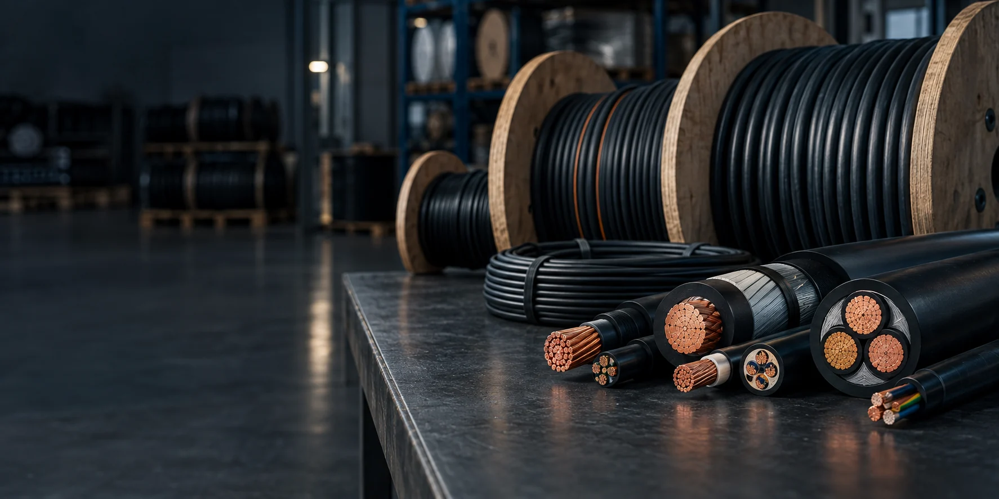
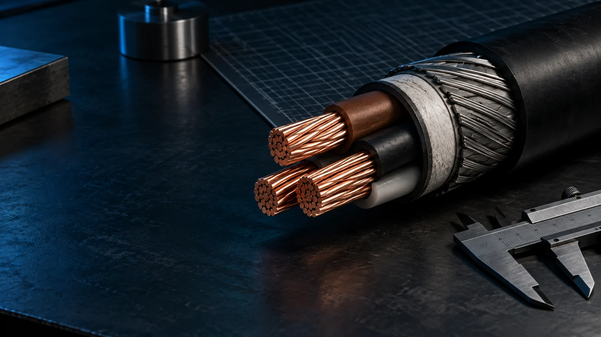

01 / MARKET
گزارش ۰۱ · شواهد بازاررقبا و فرصتها
۱۰ سایت مرتبط، خلأهای قابل مشاهده و ۱۸ تصویر صفحه اصلی در دسکتاپ و گوشی.
دیدن گزارش ←گزارش رقبا، راهبرد سئو، مسیر ساخت و نمونه طراحی برای سایت تأمینکننده کابل وارداتی؛ از شواهد بازار تا تصمیم اجرایی، همه در یک مسیر روشن.

برای این تأمینکننده وارداتی، مسیر اصلی یافتن مدل، دیدن مشخصات و مدارک، و ثبت استعلام دقیق است. چهار گزارش زیر به ترتیب نشان میدهند این تصمیم از کدام شواهد آمده و چگونه اجرا و طراحی میشود.
هر گزارش یک تصمیم را روشن میکند؛ لینکهای زیر مستقیم به بخشهای مهم میرسند.
۱۰ سایت مرتبط، خلأهای قابل مشاهده و ۱۸ تصویر صفحه اصلی در دسکتاپ و گوشی.
دیدن گزارش ←
02 / STRATEGYاولویتهای نسخه اول، صفحه مرجع مدل و خانواده، و مسیر استعلام خریدار فنی.
دیدن گزارش ←روند کار، ابزارها و معیار انتخاب میان وردپرس و کدنویسی، همراه با مسیر محتوای AI.
دیدن گزارش ←مسیر خریدار، نه طرح وودمارت و نمونه مدیریت قیمت برای فروشگاه کابل.
دیدن گزارش ←سه نمای زیر نمونهای از تصاویر ثبتشدهاند. در گزارش رقبا، صفحه اصلی هر سایت در اندازه دسکتاپ و گوشی همراه با توضیح طراحی آن آمده است.
هر نتیجه به بخش مستند یا تصمیم متناظر در گزارشهای داخلی پیوند دارد.
سه سایت گزارش اولیه مهماند، اما در کابل صنعتی و شبکه، بازیگران تخصصی دیگری هم در جستوجو و استعلام حضور دارند.
دیدن نقشه رقابت ←پارتنامبر، دیتاشیت، اصالت قابل انتشار و تاریخ بازبینی باید به صفحه مرجع همان کالا وصل شوند.
دیدن اولویتها ←هر صفحه به قصد جستوجوی خودش پاسخ میدهد؛ ترکیبهای بیتقاضای فیلتر به صفحه مستقل تبدیل نمیشوند.
دیدن نقشه سئو ←جستوجوی کد یا انتخاب بر پایه مشخصات، مقایسه مدل، بررسی مدرک و استعلام همان کالا یک مسیر پیوستهاند.
دیدن مدل طراحی ←